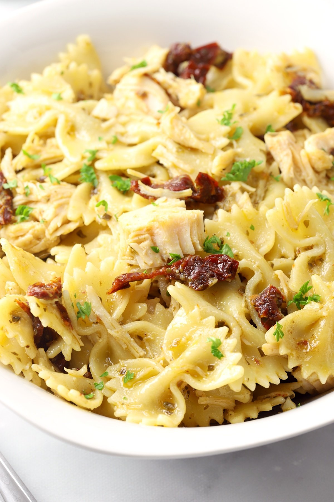

Chicken Pesto Pasta

Description
This chicken pesto pasta is easy and delicious. Serve with crusty bread and salad for a quick dinner.
Use as much or as little pesto sauce as you like.
Using homemade pesto will taste even better, but it adds to prep time. Enjoy!
Ingredients
- 1 (16 ounce) package bow tie pasta
- 1 teaspoon olive oil
- 2 cloves garlic, minced
- 2 skinless, boneless chicken breasts, cut into bite-sized pieces
- 1 pinch crushed red pepper flakes, or to taste
- 1/2 cup pesto sauce
- 1/3 cup oil-packed sun-dried tomatoes, drained and cut into strips
Instructions
-
Bring a large pot of lightly salted water to a boil. Add pasta and cook until al dente, 8 to 10 minutes; drain.
-
Heat oil in a large skillet over medium heat. Saute garlic until tender, then stir in chicken and season with red pepper flakes.
Cook until chicken is golden and cooked through.
-
Combine pasta, chicken, pesto, and sun-dried tomatoes in a large bowl; toss to coat evenly.